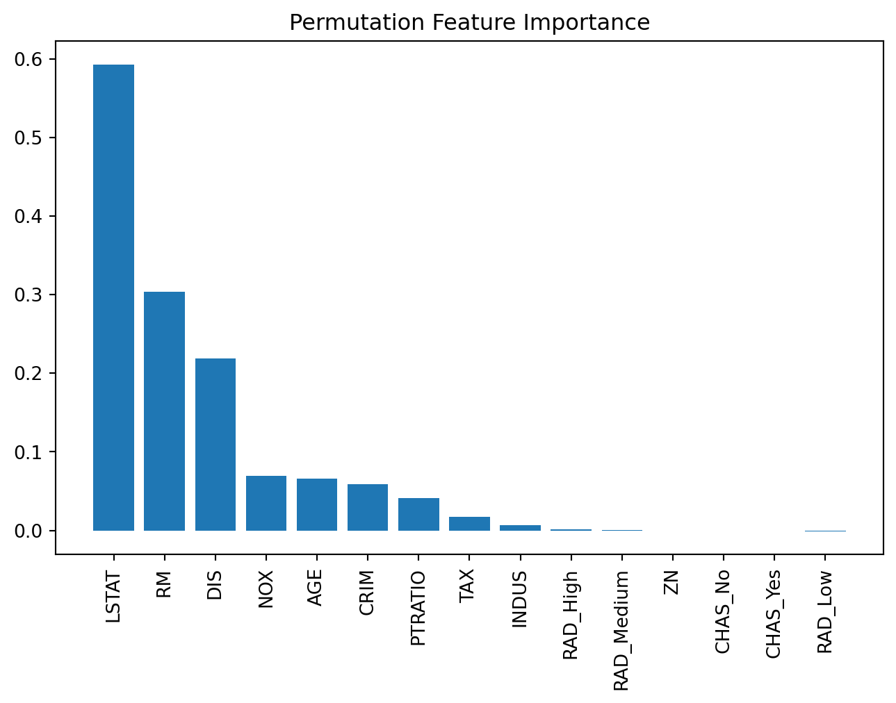

import pandas as pd
import matplotlib.pyplot as plt
import seaborn as sns
from sklearn.model_selection import train_test_split
from sklearn.tree import DecisionTreeRegressor, plot_tree
from sklearn.ensemble import BaggingRegressor, RandomForestRegressor
from sklearn.ensemble import GradientBoostingRegressor
from sklearn.metrics import mean_squared_error
from sklearn.inspection import permutation_importanceEnsemble Methods for Regression
IN2004B: Generation of Value with Data Analytics
Alan R. Vazquez
Department of Industrial Engineering
Agenda
- Introduction
- Bagging
- Random Forests
- Boosting
- Ensemble Methods for Time Series
Introduction
Load the libraries
Before we start, let’s import the data science libraries into Python.
Here, we use specific functions from the pandas, matplotlib, seaborn and sklearn libraries in Python.
Decision trees
Simple and useful for interpretations.
Can handle continuous and categorical predictors and responses. So, they can be applied to both classification and regression problems.
Computationally efficient.

Limitations of decision trees
In general, decision trees do not work well for classification and regression problems.
However, they can be combined to build effective algorithms for these problems.
Ensamble methods
Ensemble methods are frameworks to combine decision trees.
Here, we will cover two popular ensamble methods:
Bagging. Ensemble many deep trees.
- Quintessential method: Random Forests.
Boosting. Ensemble small trees sequentially.
Example 1
The “BostonHousing.xlsx” contains data collected by the US Bureau of the Census concerning housing in the area of Boston, Massachusetts. The dataset includes data on 506 census housing tracts in the Boston area in 1970s.
The goal is to predict the median house price in new tracts based on information such as crime rate, pollution, and number of rooms.
The response is the median value of owner-occupied homes in $1000s, contained in the column MEDV.
The predictors
CRIM: per capita crime rate by town.ZN: proportion of residential land zoned for lots over 25,000 sq.ft.INDUS: proportion of non-retail business acres per town.CHAS: Charles River (‘Yes’ if tract bounds river; ‘No’ otherwise).NOX: nitrogen oxides concentration (parts per 10 million).RM: average number of rooms per dwelling.AGE: proportion of owner-occupied units built prior to 1940.DIS: weighted mean of distances to five Boston employment centersRAD: index of accessibility to radial highways (‘Low’, ‘Medium’, ‘High’).TAX: full-value property-tax rate per $10,000.PTRATIO: pupil-teacher ratio by town.LSTAT: lower status of the population (percent).
Read the dataset
We read the dataset and set the variable CHAS and RAD as categorical.
| CRIM | ZN | INDUS | CHAS | NOX | RM | AGE | DIS | RAD | TAX | PTRATIO | LSTAT | MEDV | |
|---|---|---|---|---|---|---|---|---|---|---|---|---|---|
| 0 | 0.00632 | 18.0 | 2.31 | No | 0.538 | 6.575 | 65.2 | 4.0900 | Low | 296 | 15.3 | 4.98 | 24.0 |
| 1 | 0.02731 | 0.0 | 7.07 | No | 0.469 | 6.421 | 78.9 | 4.9671 | Low | 242 | 17.8 | 9.14 | 21.6 |
| 2 | 0.02729 | 0.0 | 7.07 | No | 0.469 | 7.185 | 61.1 | 4.9671 | Low | 242 | 17.8 | 4.03 | 34.7 |
| 3 | 0.03237 | 0.0 | 2.18 | No | 0.458 | 6.998 | 45.8 | 6.0622 | Low | 222 | 18.7 | 2.94 | 33.4 |
| 4 | 0.06905 | 0.0 | 2.18 | No | 0.458 | 7.147 | 54.2 | 6.0622 | Low | 222 | 18.7 | 5.33 | 36.2 |
Generating predictors in Python
First, we use the function .drop() from pandas to drop the response column MEDV and store the result in X_full.
Unfortunately, bagging does not work with categorical predictors such as CHAS and RAD. So, we must transform them into dummy variables using the code below.
Generate the response in Python
Next, we use the function .filter() from pandas to extract the column MEDV from the data frame. We store the result in Y_full.
We partition the full dataset into 80% for training and the other 20% for validation.
Bagging
Bootstrap samples
Bootstrap samples are samples obtained with replacement from the original sample. So, an observation can occur more than one in a bootstrap sample.
Bootstrap samples are the building block of the bootstrap method, which is a statistical technique for estimating quantities about a population by averaging estimates from multiple small data samples.

Bagging
Given a training dataset, bagging averages the predictions from decision trees over a collection of bootstrap samples.

Predictions
Let \(\boldsymbol{x} = (x_1, x_2, \ldots, x_p)\) be a vector of new predictor values.
For regression problems:
Each regression tree outputs the average value depending on the region \(\boldsymbol{x}\) falls in. For the b-th tree, denote such average as \(\hat{T}_{b}(\boldsymbol{x})\).
Predict using the average of all regression trees
\[\hat{f}_{bag}(\boldsymbol{x}) = \frac{1}{B} \sum_{b=1}^{B} \hat{T}_{b}(\boldsymbol{x}). \]
Implementation
How many trees? No risk of overfitting, so use plenty.
No pruning necessary to build the trees. However, one can still decide to apply some pruning or early stopping mechanism.
The size of bootstrap samples is the same as the size of the training dataset, but we can use a different size.
Bagging in Python
We define a bagging algorithm for regression using the BaggingRegressor function from scikit-learn.
The n_estimators argument is the number of decision trees to generate in bagging. Ideally, it should be high, around 500.
random_state allows us to obtain the same bagging algorithm in different runs of the algorithm.
Predictions on the validation data
To predict the responses on the validation data, we use the function .predict() using the predictor values in the validation dataset contained in X_valid.
array([19.633 , 13.841 , 21.099 , 44.308 , 25.0304, 34.4564, 30.14 ,
14.872 , 23.2688, 20.2058, 17.0822, 20.0214, 19.63 , 8.9644,
24.181 , 29.234 , 20.9658, 20.8312, 25.4196, 18.6754, 22.811 ,
26.332 , 24.0148, 35.9618, 23.603 , 20.1904, 8.334 , 15.895 ,
47.5352, 24.4224, 34.1622, 23.0886, 24.5184, 13.3602, 22.6582,
12.9684, 27.8578, 19.7288, 22.8308, 18.828 , 9.132 , 24.684 ,
21.963 , 12.552 , 27.3266, 33.0398, 19.4272, 25.732 , 19.483 ,
25.3774, 26.8736, 16.9658, 20.7424, 28.7982, 27.6784, 12.6504,
23.2288, 38.3496, 20.3024, 22.0866, 17.8702, 15.7892, 13.6608,
20.9268, 23.128 , 20.5692, 20.5552, 15.7398, 32.9554, 33.425 ,
15.4748, 17.5034, 21.1956, 20.6642, 29.5676, 15.3768, 19.0814,
19.1036, 32.3824, 21.7242, 22.168 , 20.579 , 23.7326, 20.8938,
34.084 , 21.5558, 19.9566, 19.169 , 21.4316, 15.4428, 46.117 ,
23.3472, 8.1876, 14.912 , 25.552 , 16.2042, 22.1926, 44.9408,
14.383 , 21.1514, 14.9606, 22.3716])Validation RMSE
We compute the root mean squared error on the validation data using the mse() function. Recall that the responses from the validation dataset are in Y_valid, and the model predictions are in Y_pred.
A single deep tree
To compare the bagging, let’s use a single deep tree.
Let’s compute the validation RMSE of the tree.
Advantages
Bagging will have lower prediction errors than a single regression tree.
The fact that, for each tree, not all of the original observations were used, can be exploited to produce an estimate of the accuracy for classification. This estimate is called the out-of-bag error estimate which is an estimate of the RMSE on the test dataset.
Limitations
Loss of interpretability: the final bagged classifier is not a tree, and so we forfeit the clear interpretative ability of a classification tree.
Computational complexity: we are essentially multiplying the work of growing (and possibly pruning) a single tree by \(B\).
Fundamental issue: bagging a good model can improve predictive performance, but bagging a bad one can seriously degrade it.
Other issues
Suppose a variable is very important and decisive.
It will probably appear near the top of a large number of trees.
And these trees will tend to vote the same way.
In some sense, then, many of the trees are “correlated”.
This will degrade the performance of bagging.
- Bagging is unable to capture simple decision boundaries

Random Forest
Random Forest
Exactly as bagging, but…
- When splitting the nodes using the CART algorithm, instead of going through all possible splits for all possible variables, we go through all possible splits on a random sample of a small number of variables \(m\), where \(m < p\).
Random forests can improve the performance of bagging.
Why does it work?
Not so dominant predictors will get a chance to appear by themselves and show “their stuff”.
This adds more diversity to the trees.
The fact that the trees in the forest are not (strongly) correlated means lower variability in the predictions and so, a bettter performance overall.
Tuning parameter
How do we set \(m\)?
- For regression, can use \(m = \sqrt{p}\) and a minimum leaf node size of 5.
In practice, sometimes the best values for these parameters will depend on the problem. So, we can treat \(m\) as a tuning parameter.
Note that if \(m = p\), we get bagging.
The final product is a black box

A black box. Inside the box are several hundred trees, each slightly different.
You put an observation into the black box, and the black box classifies it or predicts it for you.
Random Forest in Python
In Python, we define a RandomForest algorithm for classification using the RandomForestRegressor function from scikit-learn.
n_estimators sets the number of decision trees to use, min_samples_leaf sets the minimum size for the terminal nodes, and max_features sets the maximum number of predictors to try in each split.
RMSE
Evaluate the performance of random forest.
Predictor importance
Code
# Create DataFrame
importance_df = pd.DataFrame({
'Feature': X_valid.columns,
'Importance': result.importances_mean
}).sort_values(by='Importance', ascending=False)
# Plot bar chart
plt.figure(figsize=(8, 5))
plt.bar(importance_df['Feature'], importance_df['Importance'])
plt.xticks(rotation=90)
plt.title('Permutation Feature Importance')
plt.show()
Boosting
Boosting
In boosting, we also grow multiple decision trees. But instead of growing trees randomly, each new tree depends on the previous one.
Boosting is easier to understand in the context of regression, rather than classification.
Idea: Explore cooperation between desicion trees, rather than diversity as in Bagging and Random Forest.
Boosting for regression
Boosting creates a sequence of trees, each one building upon the previous.
Earlier trees are small, and the next tree is created with the residuals of the previous tree.
In other words, at each step, we try to explain the information that we didn’t explain in previous steps.
Gradually, the sequence “learns” to predict.
Something a little odd: earlier trees are deliberately “held back” to keep them from explaining too much. This creates “slow learning”.

https://pythongeeks.org/gradient-boosting-algorithm-in-machine-learning/
Initially, the boosted tree is \(\hat{f}(\boldsymbol{x}) = 0\) and the residuals of this tree are \(r_i = y_i - f(\boldsymbol{x}_i)\) for all \(i\) in the training data.
At each step \(b\) in the process (\(b = 1, \ldots, B\)), we
- Build a regression tree \(\hat{T}_b\) with \(d\) splits to the training data \((\boldsymbol{X}, \boldsymbol{r})\). This tree has \(d+1\) terminal nodes.
- Update the boosted tree \(\hat{f}\) by adding in a shrunken version of the new tree: \(\hat{f}(\boldsymbol{x}) \leftarrow \hat{f}(\boldsymbol{x}) + \lambda \hat{T}_b(\boldsymbol{x})\).
- Update the residuals using shrunken tree, \(r_i \leftarrow r_i - \lambda \hat{T}_b(x_i)\).
The final boosted tree is: \(\hat{f}(\boldsymbol{x}) = \sum_{b=1}^{B} \lambda \hat{T}_b (\boldsymbol{x}).\)
Why does this work?
By using a small tree, we are deliberately leaving information out of the first round of the model. So what gets fit is the “easy” stuff.
The residuals have all of the information that we haven’t yet explained. We continue iterating on the residuals, fitting them with small trees, so that we slowly explain the bits of the variation that are harder to explain.
This process is called “learning”: at each iteration, we get a better fit.
By multiplying by \(\lambda <1\), we “slow down” the learning (by making it harder to fit all of the variation), and there is research that says that slower learning is better.
Tuning parameters
The number of trees \(B\). Unlike bagging and random forest, boosting can overfit if \(B\) is too large. We use so-called K-fold cross-validation to select \(B\).
The shrinkage parameter \(\lambda\), a small positive number. Typical values are 0.01 or 0.001. Very small \(\lambda\) can require using a very large value of B to achieve good performance.
The number of splits \(d\) in each tree. Common choices are 1, 4 or 5. Often \(d = 1\), in which case each tree is a stump.
Boosting in Python
In Python, we define a Boosting algorithm for classification using the GradientBoostingRegressor function from scikit-learn.
n_estimators sets the number of decision trees to use, learning_rate sets the value of \(\lambda\), and max_depth sets the depth of the tree.
Validation RMSE
Evaluate the performance of the boosting algorithm.
Predictor importance
We can also apply predictor importance to the gradient boosting algorithm.
Code
# Create DataFrame
importance_df = pd.DataFrame({
'Feature': X_valid.columns,
'Importance': result.importances_mean
}).sort_values(by='Importance', ascending=False)
# Plot bar chart
plt.figure(figsize=(8, 5))
plt.bar(importance_df['Feature'], importance_df['Importance'])
plt.xticks(rotation=90)
plt.title('Permutation Feature Importance')
plt.show()
Issues with boosting
Loss of interpretability: the final boosted model is a weighted sum of trees, which we cannot interpret easily.
Computational complexity: since it uses slow learners, it can be time consuming. However, we are growing small trees, each step can be done relatively quickly in some cases (e.g. AdaBoost).
Ensemble methods for Time Series
Example
Return to main page

Tecnologico de Monterrey